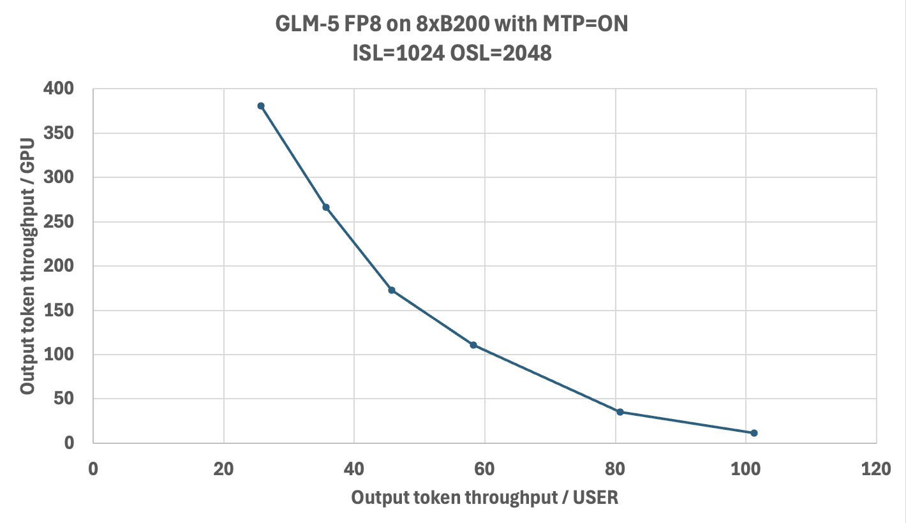

Deployment Guide for GLM-5 on TensorRT LLM - Blackwell Hardware#
Introduction#
This deployment guide provides step-by-step instructions for running the GLM-5 model using TensorRT LLM with FP8 and NVFP4 quantization, optimized for NVIDIA Blackwell GPUs. It covers the complete setup required; from accessing model weights and preparing the software environment to configuring TensorRT LLM parameters, launching the server, and validating inference output.
GLM-5 uses Multi-Latent Attention (MLA) with DeepSeek Sparse Attention (DSA). It shares the same architecture as DeepSeek V3.2 and reuses the DeepseekV32ForCausalLM code path in TensorRT LLM. GLM-5 natively supports Multi-Token Prediction (MTP) for speculative decoding.
The guide is intended for developers and practitioners seeking high-throughput or low-latency inference using NVIDIA’s accelerated stack.
Prerequisites#
GPU: 8x NVIDIA B200 (SM100)
OS: Linux
Drivers: CUDA Driver 575 or later
Docker with NVIDIA Container Toolkit installed
Minimum TensorRT LLM version: 1.3.0rc8
Models#
The following checkpoints are available:
FP8 model: zai-org/GLM-5-FP8 — Official FP8 checkpoint
BF16 model: zai-org/GLM-5 — Official BF16 checkpoint
NVFP4 model: warnold-nv/GLM-5-nvfp4-v1 — Unofficial NVFP4 checkpoint for experimentation only. Quantized with ModelOpt by Will Arnold.
git lfs install
git clone https://huggingface.co/zai-org/GLM-5-FP8 /models/GLM-5-FP8
MoE Backend Support Matrix#
There are multiple MoE backends inside TensorRT LLM. Here is the support matrix for GLM-5:
Device |
Checkpoint |
Supported moe_backend |
|---|---|---|
B200/GB200 |
FP8 |
DEEPGEMM |
B200/GB200 |
NVFP4 |
TRTLLM |
The default MoE backend is CUTLASS. For GLM-5, you must set moe_config.backend explicitly as shown in the configurations below.
Deployment Steps#
Run Docker Container#
Run the Docker container using the TensorRT LLM NVIDIA NGC image.
docker run --rm -it \
--ipc=host \
--gpus all \
-p 8000:8000 \
-v /path/to/your/models:/models \
--name tensorrt_llm \
nvcr.io/nvidia/tensorrt-llm/release:1.3.0rc8 \
/bin/bash
Note:
You can mount additional directories using the
-v <host_path>:<container_path>flag, such as mounting the downloaded weight paths.The command maps port
8000from the container to your host so you can access the LLM API endpoint from your host.See https://catalog.ngc.nvidia.com/orgs/nvidia/teams/tensorrt-llm/containers/release/tags for all available containers. Containers published in the main branch weekly have an
rcNsuffix, while the monthly release with QA tests has norcNsuffix. Use thercrelease to get the latest model and feature support.
If you want to use the latest main branch, you can build from source: https://nvidia.github.io/TensorRT-LLM/latest/installation/build-from-source-linux.html
All commands below should be run inside the Docker container.
Recommended Performance Settings#
Treat these as a starting point and tune the parameters for your workload.
B200 FP8 Config#
cat > /tmp/config.yml <<EOF
custom_tokenizer: glm_moe_dsa
cuda_graph_config:
enable_padding: true
max_batch_size: 128
enable_attention_dp: false
enable_chunked_prefill: true
kv_cache_config:
enable_block_reuse: false
free_gpu_memory_fraction: 0.75
dtype: fp8
stream_interval: 10
moe_config:
backend: DEEPGEMM
EOF
B200 FP8 Config with MTP#
GLM-5 natively supports Multi-Token Prediction (MTP), which enables speculative decoding by predicting multiple tokens per step. MTP can significantly improve output token throughput, especially for generation-heavy workloads. To enable it, add the speculative_config section:
cat > /tmp/config.yml <<EOF
custom_tokenizer: glm_moe_dsa
cuda_graph_config:
enable_padding: true
max_batch_size: 128
enable_attention_dp: false
enable_chunked_prefill: true
kv_cache_config:
enable_block_reuse: false
free_gpu_memory_fraction: 0.75
dtype: auto
speculative_config:
decoding_type: MTP
num_nextn_predict_layers: 1
stream_interval: 10
moe_config:
backend: DEEPGEMM
EOF
B200 NVFP4 Config#
To run with NVFP4, use the same configuration as the FP8 config above with two changes: point to the NVFP4 model checkpoint and set moe_config.backend to TRTLLM (DEEPGEMM does not support NVFP4):
moe_config:
backend: TRTLLM
Note: MTP is not currently supported with the NVFP4 checkpoint.
Launch the TensorRT LLM Server#
Below is an example command to launch the TensorRT LLM server with GLM-5 from within the container.
trtllm-serve \
/models/GLM-5-FP8 \
--host 0.0.0.0 \
--port 8000 \
--max_batch_size 128 \
--max_num_tokens 8192 \
--tp_size 8 \
--ep_size 8 \
--pp_size 1 \
--config /tmp/config.yml
[!WARNING] If you encounter OOM errors, try one or more of the following:
Lower
kv_cache_config.free_gpu_memory_fraction(e.g.,0.6).Reduce
--max_num_tokensto3072for max-throughput configs.Reduce
--max_batch_sizeandcuda_graph_config.max_batch_sizeto32or16for min-latency configs.
LLM API Options (YAML Configuration)#
These options provide control over TensorRT LLM’s behavior and are set within the YAML file passed to the trtllm-serve command via the --config argument.
custom_tokenizer#
Description: Specifies a custom tokenizer to use. GLM-5 requires the
glm_moe_dsatokenizer.
kv_cache_config#
Description: Configuration for the Key-Value (KV) cache.
Options:
enable_block_reuse: Enables KV cache block reuse across requests with shared prefixes.free_gpu_memory_fraction: A value between0.0and1.0that specifies the fraction of free GPU memory to reserve for the KV cache after the model is loaded. Recommendation: If you experience OOM errors, try reducing this value to0.7or lower.dtype: Sets the data type for the KV cache. Default:"auto".
cuda_graph_config#
Description: Configuration for CUDA graphs to optimize performance.
Options:
enable_padding: Iftrue, input batches are padded to the nearest CUDA graph batch size. This can significantly improve performance. Default:falsemax_batch_size: Sets the maximum batch size for which a CUDA graph will be created. Recommendation: Set this to match the--max_batch_sizecommand-line option.
moe_config#
Description: Configuration for Mixture-of-Experts (MoE).
Options:
backend: The backend to use for MoE operations. Must beDEEPGEMMfor FP8 on B200 orTRTLLMfor NVFP4 on B200. Default:CUTLASS
speculative_config#
Description: Configuration for speculative decoding with MTP.
Options:
decoding_type: Set toMTPto enable Multi-Token Prediction.num_nextn_predict_layers: Number of MTP prediction layers to use (GLM-5 supports1).
enable_chunked_prefill#
Description: Enables chunked prefill to overlap prefill and generation, improving throughput for mixed batches. Default:
false
See the TorchLlmArgs class for the full list of options which can be used in the YAML configuration file.
Testing API Endpoint#
Health Check#
Start a new terminal on the host to test the TensorRT LLM server you just launched. You can query the health/readiness of the server using:
curl -s -o /dev/null -w "Status: %{http_code}\n" "http://localhost:8000/health"
When Status: 200 is returned, the server is ready for queries. Note that the very first query may take longer due to initialization and compilation.
Basic Test#
After the TensorRT LLM server is set up and shows Application startup complete, you can send requests to the server.
curl http://localhost:8000/v1/completions \
-H "Content-Type: application/json" \
-d '{
"model": "zai-org/GLM-5-FP8",
"prompt": "What is the capital of France?",
"max_tokens": 16,
"temperature": 0
}'
Example response:
{
"id": "cmpl-...",
"object": "text_completion",
"model": "zai-org/GLM-5-FP8",
"choices": [
{
"index": 0,
"text": "The capital of France is Paris. Paris is the largest city",
"finish_reason": "length"
}
],
"usage": {
"prompt_tokens": 8,
"total_tokens": 24,
"completion_tokens": 16
}
}
Troubleshooting Tips#
CUDA OOM errors: Try reducing
--max_batch_size,--max_num_tokens, orkv_cache_config.free_gpu_memory_fraction.As a workaround for memory fragmentation, you can set
PYTORCH_ALLOC_CONF=max_split_size_mb:8192. For more details, refer to the PyTorch documentation on optimizing memory usage.
Checkpoint compatibility: Ensure your model checkpoints are compatible with the expected format.
GPU utilization: For performance issues, check GPU utilization with
nvidia-smiwhile the server is running.Container startup: If the container fails to start, verify that the NVIDIA Container Toolkit is properly installed.
Port conflicts: Make sure the server port (
8000in this guide) is not being used by another application.Configuration files: Ensure that YAML config files are correctly formatted to avoid runtime errors.
Architecture: GLM-5 reuses the DeepSeek V3.2 attention implementation (
DeepseekV32Attention), which includes a built-in DSA indexer that routes context attention through absorption mode. The DSA parameters (index_n_heads,index_head_dim,index_topk) are read automatically from the model config.
Benchmarking Performance#
To benchmark the performance of your TensorRT LLM server, you can use the built-in benchmark_serving.py script. First, create a wrapper bench.sh script:
cat << 'EOF' > bench.sh
concurrency_list="32 64 128 256 512 1024 2048 4096"
multi_round=5
isl=1024
osl=1024
result_dir=/tmp/glm5_output
for concurrency in ${concurrency_list}; do
num_prompts=$((concurrency * multi_round))
python -m tensorrt_llm.serve.scripts.benchmark_serving \
--model zai-org/GLM-5-FP8 \
--backend openai \
--dataset-name "random" \
--random-input-len ${isl} \
--random-output-len ${osl} \
--random-prefix-len 0 \
--random-ids \
--num-prompts ${num_prompts} \
--max-concurrency ${concurrency} \
--ignore-eos \
--tokenize-on-client \
--percentile-metrics "ttft,tpot,itl,e2el"
done
EOF
chmod +x bench.sh
To save results to files, add these options to each benchmark command:
--save-result \
--result-dir "${result_dir}" \
--result-filename "concurrency_${concurrency}.json"
For more benchmarking options see benchmark_serving.py.
Run bench.sh to begin a serving benchmark. This will take a long time if you run all the concurrencies.
./bench.sh
Sample TensorRT LLM serving benchmark output. Your results may vary due to ongoing software optimizations.
============ Serving Benchmark Result ============
Successful requests: 16
Benchmark duration (s): 17.66
Total input tokens: 16384
Total generated tokens: 16384
Request throughput (req/s): [result]
Output token throughput (tok/s): [result]
Total Token throughput (tok/s): [result]
User throughput (tok/s): [result]
---------------Time to First Token----------------
Mean TTFT (ms): [result]
Median TTFT (ms): [result]
P99 TTFT (ms): [result]
-----Time per Output Token (excl. 1st token)------
Mean TPOT (ms): [result]
Median TPOT (ms): [result]
P99 TPOT (ms): [result]
---------------Inter-token Latency----------------
Mean ITL (ms): [result]
Median ITL (ms): [result]
P99 ITL (ms): [result]
----------------End-to-end Latency----------------
Mean E2EL (ms): [result]
Median E2EL (ms): [result]
P99 E2EL (ms): [result]
==================================================
Key Metrics#
Time to First Token (TTFT)#
The typical time elapsed from when a request is sent until the first output token is generated.
Time Per Output Token (TPOT) and Inter-Token Latency (ITL)#
TPOT is the typical time required to generate each token after the first one.
ITL is the typical time delay between the completion of one token and the completion of the next.
Both TPOT and ITL ignore TTFT.
For a single request, ITLs are the time intervals between tokens, while TPOT is the average of those intervals:
Across different requests, average TPOT is the mean of each request’s TPOT (all requests weighted equally), while average ITL is token-weighted (all tokens weighted equally):
End-to-End (E2E) Latency#
The typical total time from when a request is submitted until the final token of the response is received.
Total Token Throughput#
The combined rate at which the system processes both input (prompt) tokens and output (generated) tokens.
Tokens Per Second (TPS) or Output Token Throughput#
How many output tokens the system generates each second.
Performance#
The chart below shows the Pareto frontier of output-token throughput per GPU versus per-user latency on 8x B200 with GLM-5-FP8 and MTP enabled. Benchmarks were run using AI-Perf as the client against TRT-LLM v1.2.0rc4 (cc45119).
